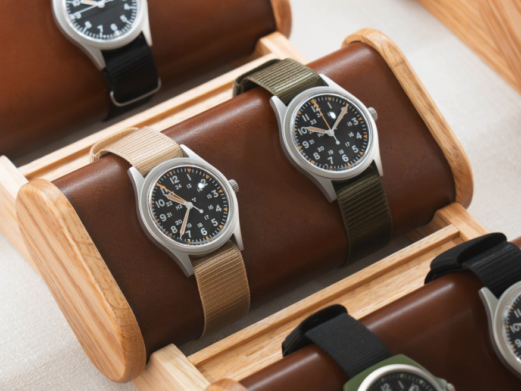
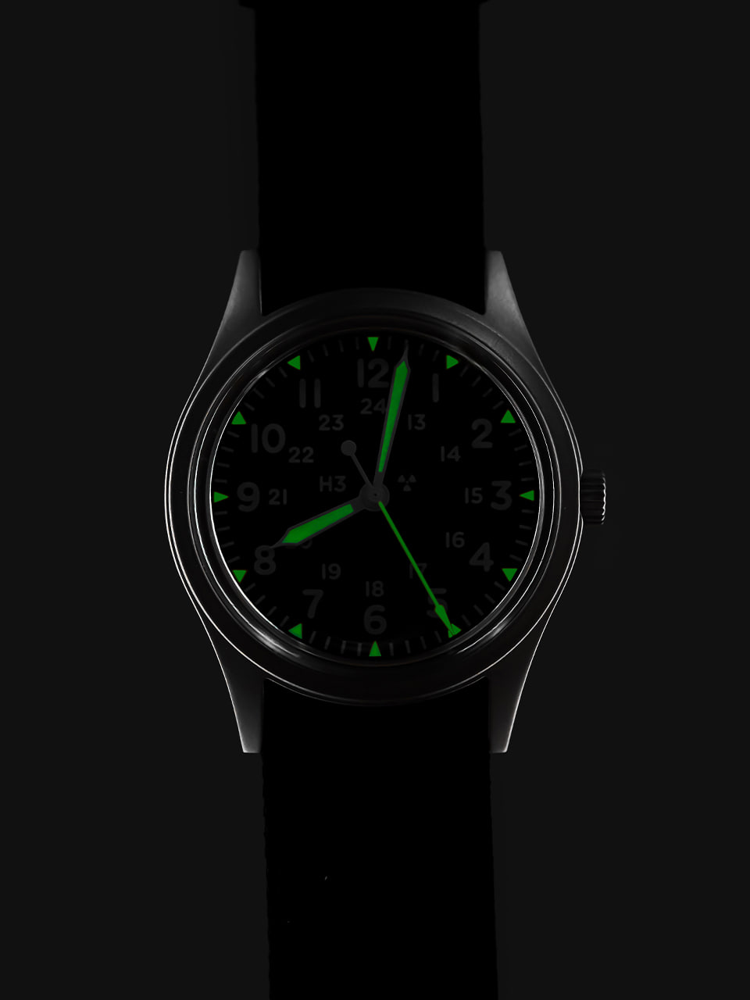
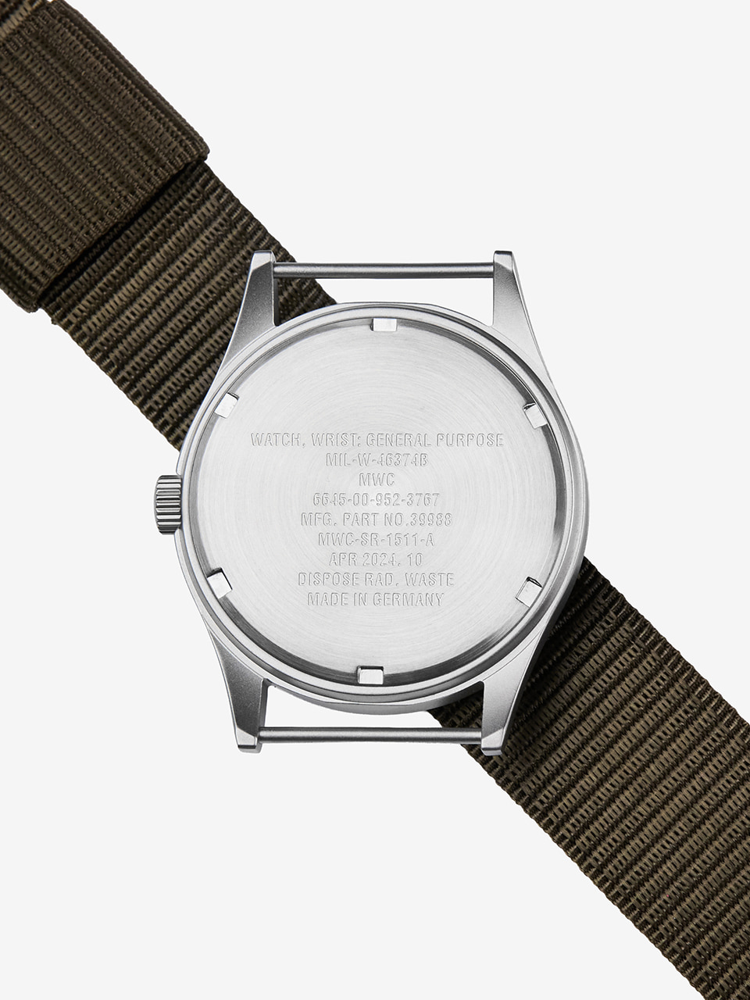
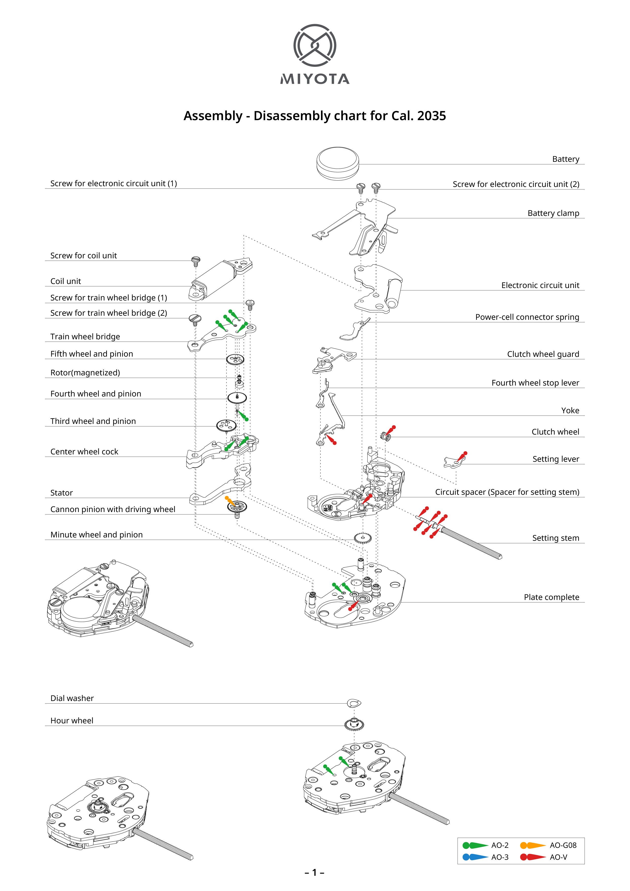

시간을 읽는
가장 단단한 방식.
군용 시계의 목적과 비례를 오늘의 일상에 맞게 다시 설계합니다.
SELECTED / STORE
지금 만날 수 있는
데저트카키.
제품 정보를 불러오는 중입니다.
브랜드 소개 / ABOUT MWC
1974년부터,
군용 시계의 신뢰를
지켜온 이름.
MWC(Military Watch Company)는 1974년 스위스에서 시작해 군용 시계를 중심으로 성장해온 브랜드입니다. 영국 국방부 조달 체계 아래 G10 타입 시계를 납품하며 쌓은 경험을, 독일 생산 원칙과 제조 전반의 내구성으로 이어갑니다.
- FOUNDED
- 1974 · 스위스
- HERITAGE
- 영국 국방부 · G10 타입
- PRODUCTION
- 독일 생산 원칙

ORIGIN / IN MY WORDS
제가 만들고 싶은 시계에 관하여처음부터 거창한 일을 하려던 건 아니었습니다. MWC를 좋아하는 고객들이 더 완성된 디자인과 콘셉트, 좋은 만듦새를 중저가 가격대에서도 만날 수 있으면 좋겠다고 생각했습니다.
가장 오래 붙잡고 고민한 것은 ‘어디까지 복각해야 하는가’였습니다. 원형에 가까운 33–34 mm가 맞는지, 36 mm가 좋은지, 아니면 38 mm가 오늘의 손목에 더 자연스러운지 계속 비교했습니다. 결국 한국 남성의 평균적인 손목 둘레와 실제 착용성을 생각해 38 mm를 선택했습니다. 원형의 숫자만 복제하기보다, 원형이 가진 비례와 태도를 오늘의 사용자에게 이어주는 쪽을 택했습니다.
다이얼 안의 H3와 방사능 표기도 쉽게 지나칠 수 없었습니다. 실제로 방사성 물질을 사용하지 않는 시계에 그 표기를 넣어도 되는지 자료를 찾고 하나씩 확인했습니다. 스트랩은 군용 규격의 인상을 제대로 살리고 싶어서 본사와 디자인을 계속 조율했습니다. 시간이 더 걸리더라도 디자인과 헤리티지를 흐리는 타협은 하지 않으려 했습니다.
“한국인이 해외 브랜드와 협업하면서,
시계 복각에 이렇게 진심으로 임해줘서 고맙습니다.”
WHY IT MATTERS
헤리티지를 오늘의 손목으로그 말을 들었을 때, 제가 오래 고민한 지점을 누군가 알아봐 주었다는 생각이 들었습니다. 복각은 과거의 모양을 그대로 옮기는 일이 아니라, 그 시계가 지켜온 이유를 오늘의 손목에 맞게 이어가는 일이라고 믿습니다.
MAKING HISTORY
한 번의 타협보다,
여러 번의 확인.
- 시작 / WHY
더 완성된 MWC를 부담 없는 가격에 전하고 싶다는 생각에서 출발했습니다.
- 비례 / 38 MM
33–34 mm, 36 mm, 38 mm를 비교한 끝에 한국인의 손목과 일상적인 착용성을 고려해 38 mm를 선택했습니다.
- 검토 / H3
방사성 물질을 쓰지 않는 제품에 H3와 방사능 표기를 넣어도 되는지 관련 자료를 찾아 확인했습니다.
- 협업 / STRAP
군용 규격의 인상을 살리기 위해 본사와 반복해서 디자인을 조율하며 스트랩을 완성했습니다.
- 다음 / CONTINUE
디자인과 헤리티지를 지키는 더 좋은 제품을 하나씩 늘려갑니다.
PROMISE / NEXT
저는 앞으로도 디자인과 헤리티지를 타협하지 않으며,
더 좋은 제품을 하나씩 늘려가겠습니다.
제품 / STORE COLLECTION
DESERT KHAKI
MIL–W–46374B
FIELD NOTE / 46374B
실전에서 검증된 규격을,
오늘의 손목에.
MIL-W-46374B는 베트남전 전후 미군의 기본 장비로 쓰인 필드 워치 규격에서 출발했습니다. 달력과 장식을 덜어내고 12·24시간 표기와 빠른 판독에 집중한 구조가 핵심입니다.
데저트 카키는 당시의 형태를 그대로 복제하기보다 34 mm 원형을 38 mm로 키우고, 316L 스테인리스 스틸과 매트 블라스트 마감으로 일상적인 착용성을 보강했습니다. 다이얼에는 H3 및 방사선 표식과 슈퍼루미노바 인덱스를 배치해 규격의 인상을 이어갑니다.
- CASE
- 38MM
- LUG TO LUG
- 46MM
- THICKNESS
- 11MM

핸즈와 삼각 인덱스에 적용한 슈퍼루미노바가 어두운 환경에서 시간 판독을 돕습니다.

미군 규격 번호와 군수 물자 관리 코드, 제조 정보가 도구다운 인상을 완성합니다.
INSIDE / MIYOTA 2035
시계 안의
작은 표준.
1981년 등장한 MIYOTA 2035는 세 개의 핸드를 구동하는 대표적인 쿼츠 무브먼트입니다. 코일과 자화 로터, 기어 트레인, 전자 회로가 3.15 mm 높이 안에 정밀하게 배치됩니다.
- HEIGHT
- 3.15 mm
- ACCURACY
- ±20초 / 월
- BATTERY
- 약 3년
- FUNCTION
- 3핸즈

MWC / SMARTSTORE
MWC의 다른 제품 만나보기
데저트카키와 함께 비교해 보기 좋은 MWC 제품을 모았습니다.
제품 정보를 불러오는 중입니다.
이야기 / FIELD NOTES
만드는 과정도
제품의 일부입니다.
크기 조정, 원 규격의 단면, 군용 스트랩 도면을 실제 자료와 함께 차근차근 기록합니다.
최신 이야기를 불러오는 중입니다.
연락하기 / CONTACT
같은 시간을
바라보고 있다면.
제품 문의, 협업 제안, 혹은 필드 워치에 대한 이야기를 보내주세요. 확인 후 천천히, 직접 답장하겠습니다.
EMAIL support@supplyroute.co.kr ↗제품 문의와 협업 제안은 위 이메일로 보내주세요.